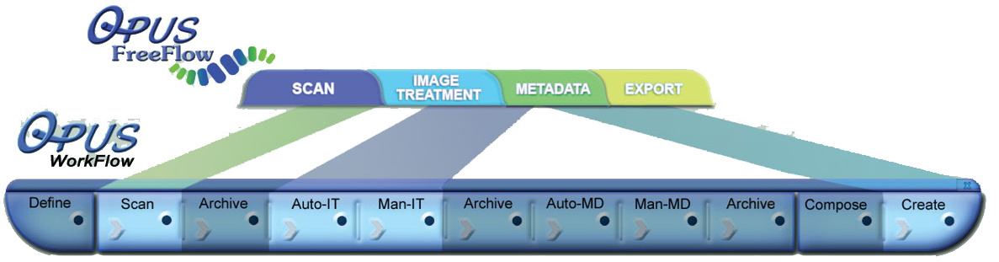
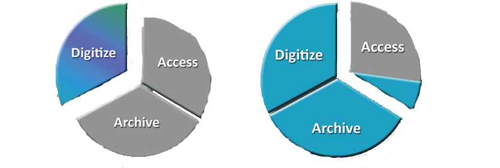

The Opus digitization process was designed specifically for academic libraries, museums and archives. Use Opus FreeFlow to build digital assets for preservation, archive, digital collections for the Web, and for viewing software. Its image treatment processes such as fan, gutter and book curvature removal, and content location and registration, are dramatically faster and easier to use than photo editing software.
Opus FreeFlow operates a wide array of preservation quality scanners and allows for the import of existing images as well. It then groups images into objects (i.e. books), which are easily managed and processed. Finally, it renders those objects into a variety of derivatives.
With Opus FreeFlow 3-tab interface, users can switch dynamically between scanning, image treatment and outputting derivatives. Multipage objects can be reopened and reprocessed at any time. Pages can be deleted and rescanned and new pages can be scanned and inserted. Unlimited derivatives can be created with variations in image size, resolution, format and file type.
Opus FreeFlow is fully compatible with Opus Digitization WorkFlow software. While objects are in the middle of the Opus WorkFlow, they can be opened with Opus FreeFlow for additional scanning, image modification and derivative generation.
No Compromise Treated Images
Hierarchical Metadata
(with Templates) OAIOpus support for the Open Archive Initiative (OAI) takes on several forms. Opus has the ability to generate export derivative sets which can be added into an OAI-compliant metadata repository and made available via the OAI-PMH to any OAI compliant metadata harvesters. The DLSG operates and manages the cloud infrastructure necessary to support this need, thus freeing our users from having to acquire and maintain the expertise to make their chosen objects available to the digital archive community at large. For example, this feature of Opus allows its users to easily contribute to the Digital Public Library Project (DPLA) with just a few clicks.
The underlying object resources (images) described in the OAI-compliant metadata export may either be hosted by the OPUS customers themselves or the resources can be uploaded to a DLSG-maintained archive repository as part of the OAI publishing process.
Published objects can be further queried and made available by Opus's support for the OAI-ORE project. In addition to the cloud based OAI publishing features, the DLSG cloud repository allows the user community of Opus Systems to share or exchange Opus objects among themselves.
Opus' hierarchical metadata capture is controlled by templates that can be created and modified to fit virtually any requirements. Input field characteristics include :required/optional, repeatable/one occurrence only and other characteristicsc that can be specified when templates are constructed of modified. Opus provides several generic templates to capture the data necessary to create virtual library output formats.
Opus provides a straightforward graphical interface for creating and modifying hierarchical templates. The templates carry the charasterics of XML elements and attributes. Data entry rules such as required/optional and single/multiple can be assigned to each field. During metadata capture and entry, Opus enforces the rules, thus simplifying metadata entry and reducing errors.

In addition, the Opus hierarchical metadata input facility allows users to scroll back and forth through the images of an object (e.g. pages of a book ) while reviewing and entering metadata.

One of the key benefits of the Opus Metadata capture system is its flexibility in allowing project curators to not only design and codify their own specialized metadata data capture needs, but to link these metadata collection sets to customized object meronomies. This degree of metadata capture task standardization affords the project's curator the confidence to know that their project's metadata needs will be meet by the data collection4 team.
Once these completed metadata collection templates have been defined , they can be shared back into curator's community, thus allowing the project to expand beyond a single institute. This ensures that the resultant aggregate of objects can be blended seamlessly together into a single master archive to be used by the project's curators to publish their collective work as part of a single repository.
Opus Output: Image Derivatives & Metadata
Opus has a library of script files for common XML, flat file and other output formats for the metadata and associated images of digital objects (e.g. METS,MODS,Dublin Core).This script library is expandable with an unlimited number of custom formats. In addition to selecting the desired output format(s) for the metadata , the clarity , size and output formats of the images can be specified (e.g TIFF,JPEG,PDF,PNG,etc.).
DLSG staff technicals can assist in modifying existing formats and creating new custom output formats.
The most exciting and immediately usable format that Opus creates is a Web-ready output that provides the experience of browsing the virtual stacks, selecting a digital book, opening it and turning the pages; as through the printed book were in front of you.
Digital Masters
Final Destinations


Content Stabilization
Content Stabilization is a general term for automatic and manual varieties of image treatment that can be performed during or after scan time with the purpose of producing clean, clear and consistently formatted digital images.
Book curve, skew, fan, gutter and black edges are automatically adjusted to render clean, consistent margins of uniform size and text position for a clean, professional look.

Content Stabilization is typically applied automatically in batch after scan time and includes features like:
- Book Curve Collection
- Image Deskew
- Margin Alignment and Uniformity
- Horizontal and Vertical Centering
- Black Border Removal
- Finger Image Removal
- Bleedthrough Correction
- Reflection/Glare Correction
One more of the image treatment features above can be applied to a single image, to selected images , or all the images in a given batch. Manual Content Stabilization allows users even more precise control of the image treatment listed above and can be applied to one, many or all images in the same group.

Opus FreeFlow and Opus WorkFlow Features Comparison
Opus FreeFlow is an application that provides the scanning, image treatment and derivative creation capabilities of the full Opus Digitization Workflow system outside of its structured project management environment.
Unlike Opus Workflow, Opus FleeFlow doesn't perform automatic archiving or manage workflow. Opus FreeFlow is also fully compatible with Opus Workflow digitization software. They can be used independently or together. For example, while objects are in the middle of the Opus Workflow, they can be opened with Opus FreeFlow for additional scanning, image modification and creation of derivatives.
 Opus FreeFlow
Opus WorkFlow
| Define Projects Features and Capabilities | FreeFlow | WorkFlow |
|---|---|---|
| Creates and manages projects | YES | |
| Creates and manages project templates | YES | |
| Creates and manages objects | YES | YES |
| Prints objects tracking sheets | ||
| Maintains a project history database | YES |
| Scanning Capabilities | FreeFlow | WorkFlow |
|---|---|---|
| Automatically reads tracking sheets | YES | |
| Containerizes the images of an object | YES | YES |
| Supports continuous (batch) scanning | YES | YES |
| Supports multiple concurrent projects and objects - suspend and resume scanning of unfinished projects and objects | YES | YES |
| Supports all Scan2Net ® scanners | YES | YES |
| Supports many TWAIN scanners | YES | YES |
| Supports insertion, deletion, rescanning and rotation of images | YES | YES |
| Supports undo/redo | YES | YES |
Opus WorkFlow VS FreeFlow Features Comparison (Con't)
| Image Treatment Capabilities | FreeFlow | WorkFlow |
|---|---|---|
| Automatically locates content(configurable) | YES | YES |
| Automatically splits pages (configurable) | YES | YES |
| Automatically removs fan and gutter (configurable) | YES | YES |
| Automatically corrects for book curve (configurable) | YES | YES |
| Automatically levels background | YES | YES |
| Manual review, redo and override | YES | YES |
| Automatic process can be individuality invoked by user | YES | YES |
| Image treatment scheduling (e.g overnight) | YES | |
| Template-based image treatment processing | YES |
| Metadata Capture Capabilities | FreeFlow | WorkFlow |
|---|---|---|
| Automatic capture of technical metadata | YES | YES |
| Hierarchical metadata entry | YES | YES |
| Template-based metadata entry | YES | YES |
| Custom template creation | YES | YES |
| Capture of METS metadata | YES | YES |
| Capture of MIX metadata | YES | YES |
| Capture of MODS metadata | YES | YES |
| Capture of Dublin Core metadata | YES | YES |
| Capture of structural metadata for 3-D virtual page turning Web output | YES | YES |
| Capture of metadata for import to OAI-PMH Compliant Repositories | YES | YES |
| Capture of metadata for import to OAI-ORE Compliant Repositories | YES | YES |
| Capture of metadata for import to D-SPACE, Content DM, Re-Discovery, Fedora | YES | YES |
| Data entry rules: (e.g required/optional fields, repeat/once only fields) | YES | YES |
| Collection Composition and Creation Capabilities | FreeFlow | WorkFlow |
|---|---|---|
| Current object output of images in formats that can be imported by D-SPACE, Content DM, Fedora, Re-Discovery and other content managers | YES | YES |
| Selection of an unlimited number of objects to be output as a collection or for overnight processing | YES | |
| Assignment of attributes to each collection | YES | |
| Collection history and attribute database | YES | |
| Collection list management | YES | |
| Object search capability | YES | |
| Derivative attribute specification (e.g file format, size, res, color depth, quality factor) | YES | YES |
| Ooutput of TIFF, JPEG, PDF, PDFA, PNG, GIF, rich text, ASCII, Unicode, audio and other file formats, (one image per files or the entire volume in a single file) | YES | YES |
| Output of full images, reduced images, Web images, thumbnail images | YES | YES |
| Automated, unattended (e.g overnight output of multiple derivatives) | YES | |
| Output of METS metadata | YES | YES |
| Output of MIX metadata | YES | YES |
| Output of MODS metadata | YES | YES |
| Output of Dublin Core metadata | YES | YES |
| Output of structural metadata for 3-D virtual page turning Web output | YES | YES |
| Output of metadata for import to OAI-PMH Compliant Repositories | YES | YES |
| Output of metadata for import to OAI-ORE Compliant Repositories | YES | YES |
| Output of metadata for import to D-SPACE, Content DM, Re-Discovery, Fedora | YES | YES |
| Archive Capabilities | FreeFlow | WorkFlow |
|---|---|---|
| Output of images and metadata for archival | YES | YES |
| Automatic archive of scanned images | YES | |
| Automatic archive of treated images | YES | |
| Automatic archive of metadata | YES | |
| Project-Level archive control via customizable | YES | |
| Incremental archiving | YES | |
| Supports Open RAID Off-line storage | YES | YES |
| Searchable archives | YES |
Image Access, Inc | 543 NW 77th Street | Boca Raton, FL 33487 | 800.378.5432 561.886.2900 | www.imageaccess.com